FST-402 FSAE Dynamometer
Acknowledgements
We would like to express our sincere gratitude to our project supervisor, Lim Hong Wee, for his guidance, valuable advice, and support throughout this project. His feedback and expertise have been instrumental in guiding the development of our project.
We would also like to thank R. Niikilesh for his assistance, technical advice, and willingness to share his knowledge throughout the project. In addition, we would like to thank Khant Min for his assistance in providing our logistics for this project.
Lastly, we would like to extend our appreciation to Joe Low Chee Wah for his technical support and assistance with the equipment and laboratory facilities required for this project.
1. Introduction
1.1 NUS FSAE EV
The NUS FSAE team designs and develops a formula-style electric vehicle to compete in the annual Formula SAE competition held at Michigan. Unlike conventional road vehicles, the FSAE car has a significantly smaller overall size, and specialised wheel hub configuration. The vehicle is rear-wheel driven by a single EMRAX 228 electric motor (Appendix A). In accordance with competition regulations, the vehicle's power output is limited to 80 kW, with a maximum operating speed of 2000 rpm.
Figure 1: NUS FSAE EV at Formula SAE Michigan
Currently, the NUS FSAE team relies on on-track testing to evaluate the vehicle's performance. However, as NUS does not have a dedicated racetrack, conducting these tests requires the race car to be fully assembled, loaded onto a truck, and transported to an external testing venue. This process is time-consuming and requires considerable logistical coordination, limiting the frequency and convenience of testing. Furthermore, on-track testing is highly dependent on weather conditions, with adverse weather potentially resulting in delays or cancellations.
Furthermore, variations in track conditions make it difficult to obtain consistent and repeatable measurements of key performance parameters, such as torque, rotational speed, power output, and drivetrain efficiency. A dynamometer would enable controlled testing within the FSAE workshop, reducing reliance on external testing venues and allowing drivetrain development before the vehicle is fully assembled. With an anticipated operating duration of 15 minutes per week, the system would also reduce testing time and logistical effort, allowing the team to optimise other areas of vehicle development.
The FSAE team has previously tried to procure a dynamometer (Appendix B). However, commercial dynamometers are unsuitable due to their high cost, large space requirements and incompatibility with the FSAE vehicle’s dimensions and wheel hub configurations. Given the team's anticipated testing duration of approximately 15 minutes per week, their cost is difficult to justify.
1.2 Problem Statement
Commercial dynamometers are unsuitable for the NUS FSAE team due to the high cost, large space requirements, and incompatibility with the vehicle's dimensions and configuration.
1.3 User Needs
Through discussions and interviews with the FSAE team, we have identified the key considerations and user needs for the dynamometer system.
Table 1: User needs
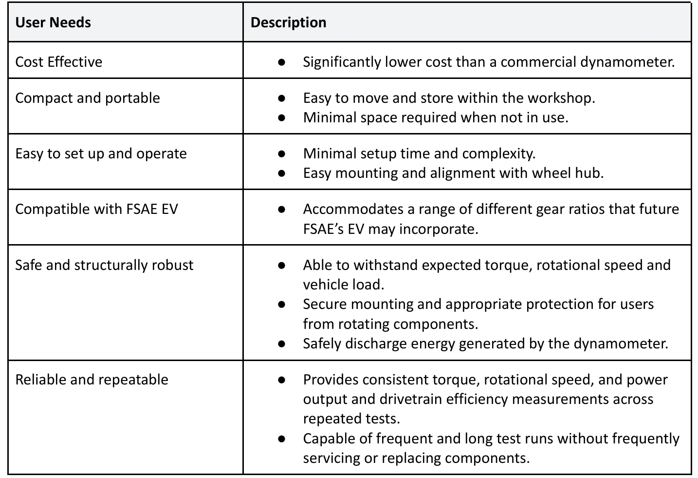
1.4 Constraints
The limited workshop space and strict budget of $2,400 were major constraints, restricting the dynamometer's overall dimensions and component selection. To minimise costs, existing components and resources from the FSAE team would be reused wherever possible.
Additionally, limited access to physical testing equipment and the computational capabilities of our available computers imposed restrictions on experimental testing and the complexity of structural simulations.
Other challenges included our limited background and practical experience in electrical engineering, as well as the limited availability of technical references and resources on dynamometer design and construction.
1.5 Previous Work
The dynamometer is a multi-year project divided into three phases, as illustrated in Figure 2. Phase 1 focuses on developing the mechanical assembly, while Phase 2 involves electrical integration and testing. Phase 3 aims to expand the system into an active dynamometer for more advanced vehicle testing, with the possibility of supporting two or four wheels in future FSAE vehicles.
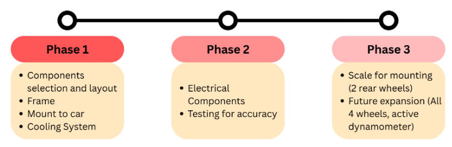
Figure 2: FSAE Dynamometer project outline
The previous team focused on Phase 1, developing a mechanical assembly consisting of a welded steel frame and a flange connecting the vehicle's wheel hub to the dynamometer motor (Figure 3). Finite Element Analysis was conducted to assess the structural strength of the frame and mounting flange, but no physical testing was performed.
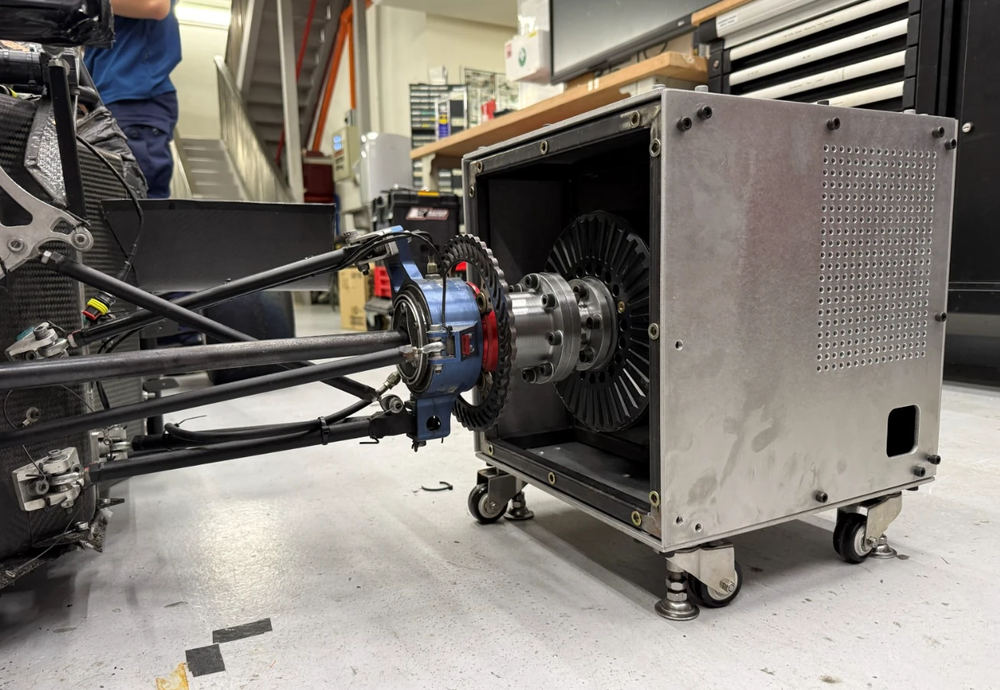
Figure 3: Previous Team’s Dynamometer attached to the hub of the FSAE Car
However, several limitations were identified in the previous design. Firstly, the wheel hub was directly connected to the dynamometer motor without accounting for the vehicle's final drive gear ratio when determining the torque and rotational speed requirements. Consequently, the maximum wheel hub torque exceeded the motor's allowable input torque, making the direct-drive configuration unsuitable. Furthermore, although a cooling system was proposed (Figure 4), its thermal performance had not been fully evaluated.
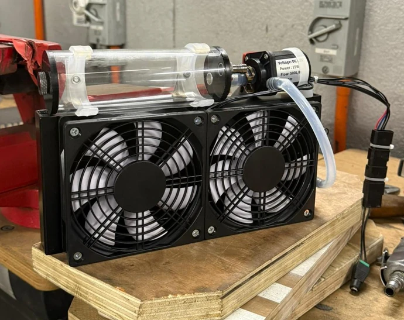
Figure 4: Previous Team’s Cooling Assembly
Building upon the previous work, our project focuses on redesigning the dynamometer's components, layout, and frame to accommodate the vehicle's actual operating conditions. Additionally, we aim to progress into Phase 2 by further developing the cooling and electrical systems towards a functional dynamometer.
1.6 Project Objective
The objective of this project is to design and develop a functional dynamometer capable of applying a safe and fixed load to the FSAE race car to evaluate its performance output, while maintaining a compact design suitable for the limited space available in the FSAE workshop. This includes ensuring the dynamometer can accommodate a range of vehicle torque and speed, and having a functional electrical system that allows the dynamometer to be loaded.
2. Design Requirements
2.1 Overall System
Figure 5: Functional Diagram of Dynamometer
Based on data from the FSAE team’s previous vehicles, the team operates with a final drive gear ratio ranging from 3:1 to 4:1, stepping down the speed from their EMRAX motor to the wheels. Although the FSAE team currently imposes operating limits on the motor, the dynamometer will be designed based on its peak capability. This provides a factor of safety to the design and ensures that the dynamometer is not restricted to the team's present configuration. Therefore, the dynamometer must be capable of accommodating the range of torque and rotational speed at the wheel hub resulting from these different gear ratios.
Hence, as seen in figure 5, the mechanical power that is first translated from the car wheel to the dynamometer will be a maximum torque of 440 Nm for a 4:1 ratio and a maximum speed of 2167 rpm for a 3:1 ratio. The dynamometer then applies a controlled resistance on the car, and the heat and energy generated during this process will be handled by another system. A structural support system will also be required to hold all the components within the dynamometer.
2.2 Design Criteria
Based on the needs of the NUS FSAE team and constraints of the dynamometer system, we came with a list of criteria to evaluate the effectiveness of the concepts:
Able to withstand hub torque of 440 Nm
Able to withstand hub speed of 2167 RPM
Able to withstand operating duration of 15 minutes per week
Compact and Portable
Smaller than 50cm (L) x 50cm (W)
Due to limited space available within FSAE workshop
Minimal setup complexity
Straightforward rigging and disassembly
Easy to set up for testing and break down for storage
Easy access for maintenance
Ensure modularity for future expansion
Perform more advanced testing without complete redesign of system
3. Concept development
3.1 Dynamometer Types
There are mainly two types of dynamometers, the chassis dynamometers and hub dynamometers.
A chassis dynamometer (Figure 6) operates similarly to a treadmill, where the vehicle is positioned on rollers that rotate with its wheels. However, this configuration requires a large working area and is generally installed in a fixed location, limiting its portability.
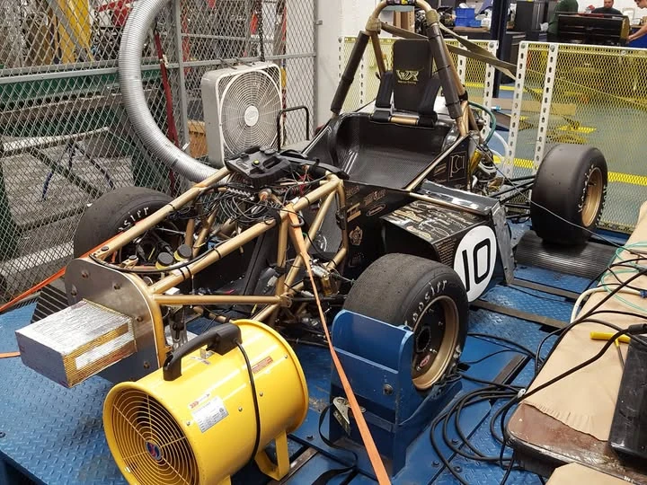
Figure 6: Chassis dynamometer [1]
In contrast, a hub dynamometer (Figure 7) connects directly to the vehicle's wheel hubs, typically consisting of two or four individual dynamometer units. This configuration offers a more compact and portable design, allowing the dynamometer to be moved and stored when not in use.
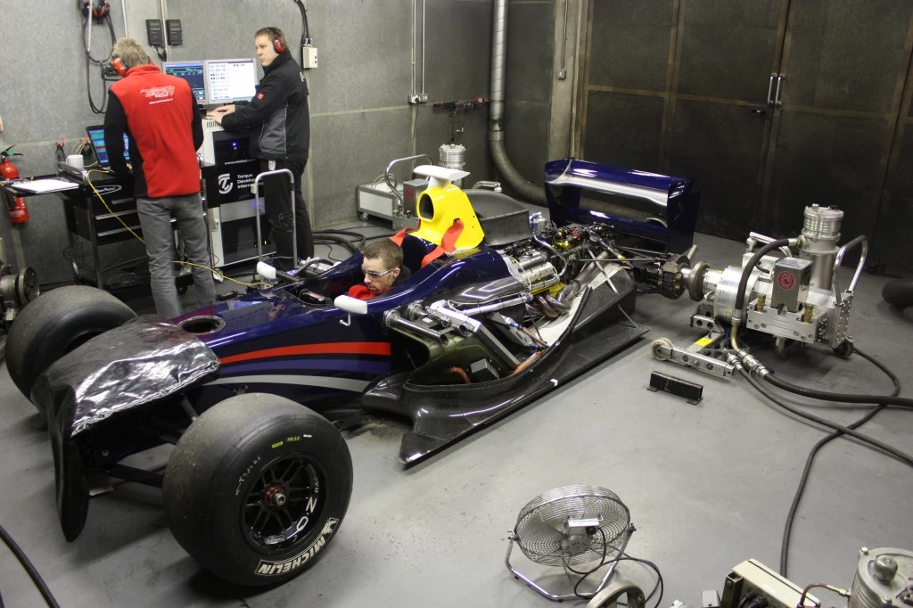
Figure 7: Hub dynamometer [1]
Therefore, due to the limited space available in the FSAE workshop, only the hub dynamometer configuration will be considered for this project.
3.1.1 Types of Hub Dynamometers
Having selected the hub dynamometer, the next consideration is its operating principle. Dynamometers can be classified as passive or active, depending on whether they only absorb mechanical power from the vehicle or can also supply power to drive it.
The project's long-term objective is to develop an active electrical dynamometer for advanced, scenario-based testing. However, due to current scope, time, and budget constraints, a passive dynamometer was selected.
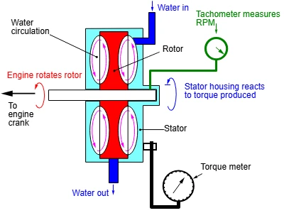
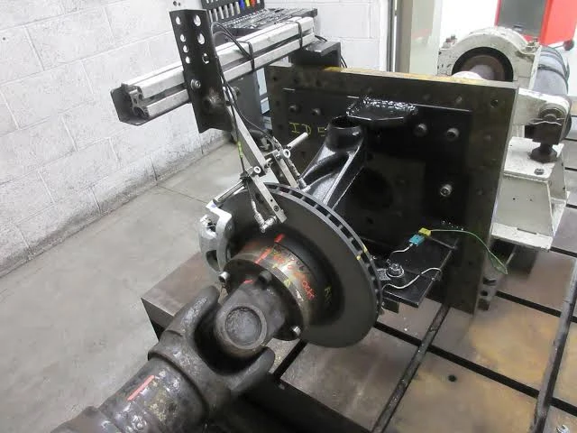
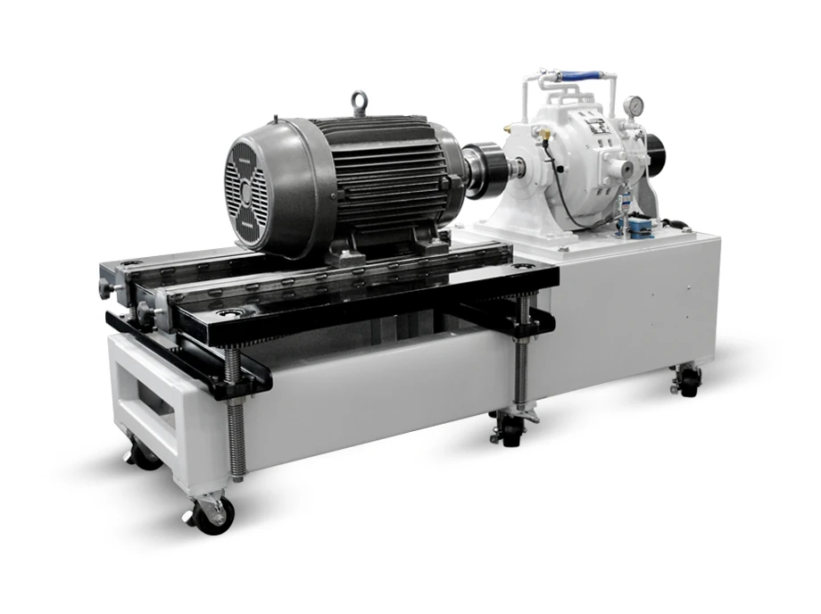
Figure 8: Hydraulic [2] (Left) , Mechanical friction [3] (Middle), Electrical [4] (Right)
Three types of dynamometers were evaluated: hydraulic, mechanical friction, and electrical (Figure 8), with their advantages and disadvantages detailed in Appendix C. The passive electrical dynamometer was selected for its compact design and relatively simple control and electrical requirements, making it suitable for the limited workshop space. More importantly, it provides a foundation for future conversion to an active dynamometer through additional power electronics and control systems, allowing the current project to focus on passive operation without limiting future development.
3.2 Types of Motor
Since we selected an electrical dynamometer, three motor options were evaluated based on torque capacity, rotational speed, size, and cost: a three-phase induction motor, Baoluo XYQ-8PC01 forklift motor, and EMRAX 228 (Figure 9). Their detailed comparison is provided in Appendix D.
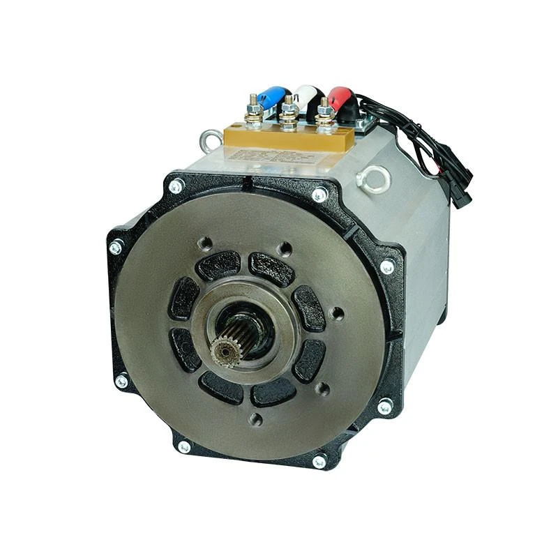
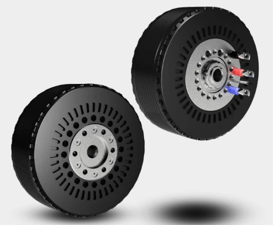
Figure 9: AC Electric Induction Motor [5] (Left), Baoluo XYQ-8PC01 [6] (Middle), EMRAX 228 [7] (Right)
The EMRAX 228 was selected as it is also used as the traction motor in the FSAE race car, providing confidence in its suitability for the intended operating conditions. Compared to the other motors, its compact size reduces the structural space required, aligning with the project's portability requirements. Furthermore, spare EMRAX 228 motors are available from the FSAE team, eliminating additional procurement costs and making it the most economical option.
3.3 Power Dissipation Method
As the passive electrical dynamometer concept was selected, a suitable method is required to manage the electrical energy generated during operation. Three methods were considered: power resistor dissipation, regenerative power, and power bank (Figure 10). A detailed description of each method, along with its advantages and limitations, is provided in Appendix E.
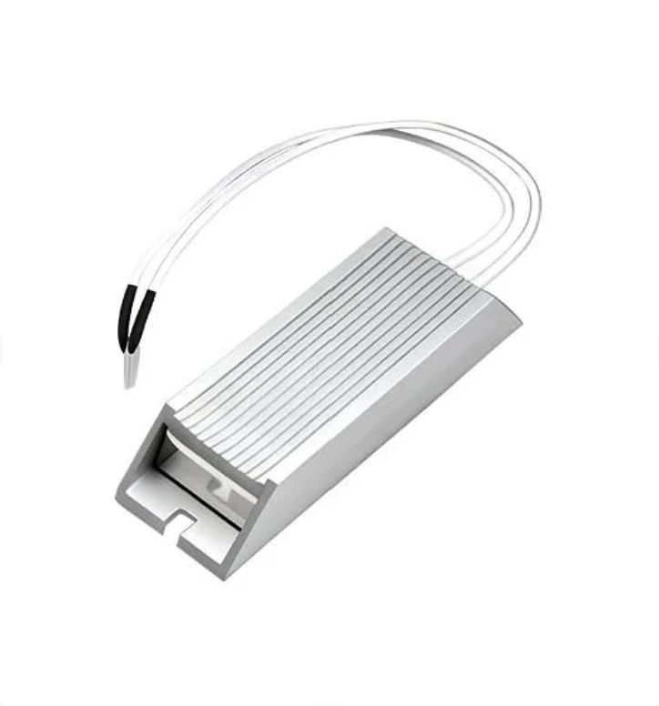
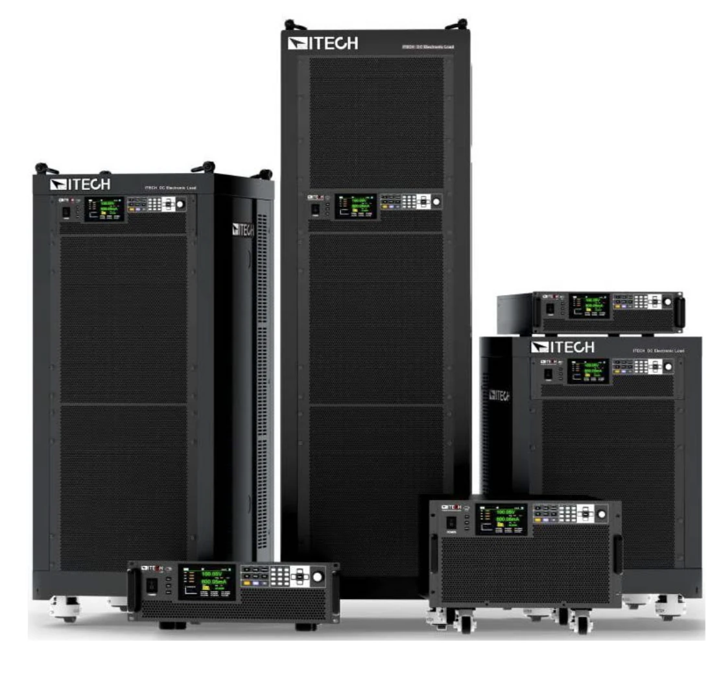
Figure 10: Power Resistor [8] (Left), Regenerative Power [9] (Middle), Power Bank [10] (Right)
The power resistor dissipation was selected as the most practical due to its simplicity and low initial cost. Power resistors convert the generated electrical energy into heat, which is subsequently dissipated into the surroundings. In contrast, grid regeneration requires costly power conversion equipment and regulatory approval, which the FSAE team had previously attempted to obtain unsuccessfully. Battery storage requires high-power industrial battery systems capable of handling high voltages and charging currents, resulting in significant costs. Given the dynamometer's short and infrequent operation, the potential energy savings would not justify these investments. Detailed cost and payback analyses are provided in Appendices I and J.
3.4 Frame Enclosure
The selection of a suitable dynamometer frame requires consideration of several factors, as the frame will be subjected to various loads and vibrations during operation and must provide sufficient structural support while meeting the project's design requirements. Three frame configurations were considered: truss frame, metal plate frame, and T-slot frame (Figure 11). A description of their construction methods, advantages, and disadvantages is provided in Appendix F.
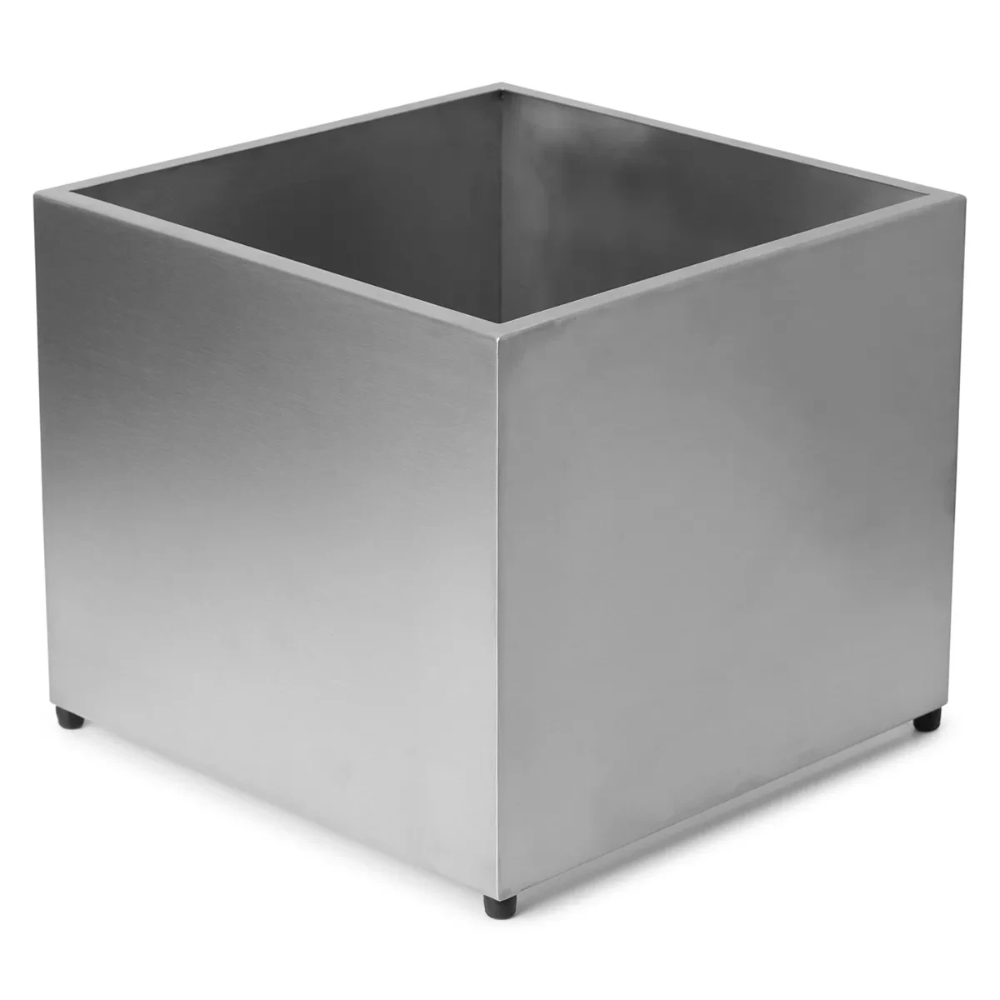
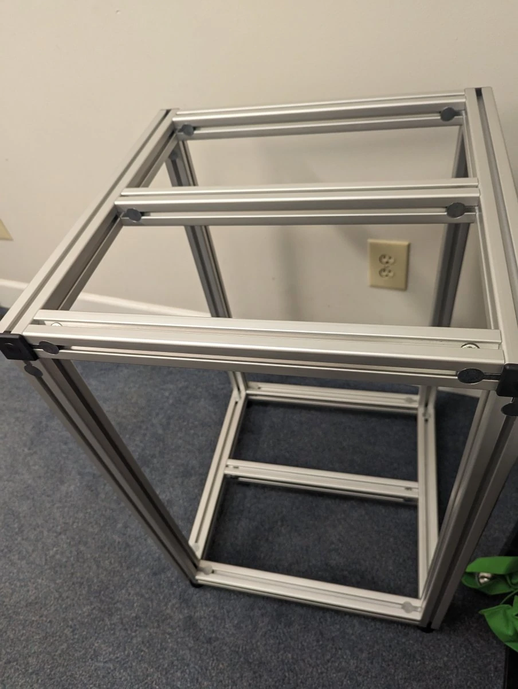
Figure 11: Truss frame [11] (Left), Metal plate frame [12] (Middle), T-slot frame [13] (Right)
Based on our design criteria, the truss frame was selected due to its high strength-to-weight ratio and structural rigidity, which are essential for withstanding the maximum operating torque and vibrations experienced during dynamometer operation. Being lightweight also improves portability, while the open-frame design allows easy access to components for maintenance and future upgrades. Furthermore, its efficient use of materials helps minimise fabrication costs, making it a suitable choice within our project budget.
3.5 Frame Joining Method
3.5.1 Frame Joining Design Considerations
Based on our design criteria for the dynamometer, we further specified the frame’s design consideration in table 2.
Table 2: Frame Joining Design Considerations
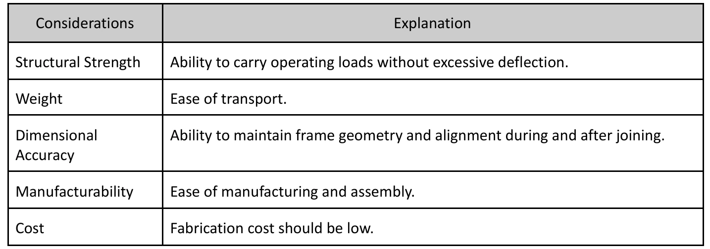
3.5.2 Frame Joining Methods
The previous year’s frame was constructed from welded steel and weighed approximately 40 kg, making it difficult to transport. As welding is restricted at NUS, fabrication had to be outsourced, resulting in higher costs and longer lead times. Furthermore, their frame experienced warping during fabrication and had to be sent back for rework, further delaying the project. Hence, this led us to consider other methods of joining the frame.
Welded Steel Frame
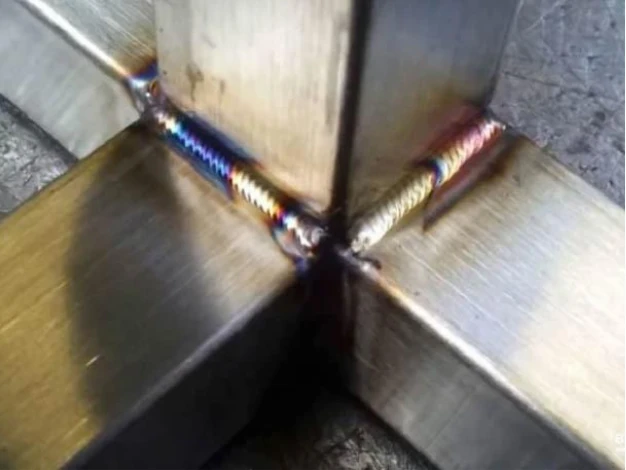
Figure 12: Welded Steel Frame [14]
Welding provides strong, rigid, and reliable joints, making it a well-established method for structural applications. However, welding introduces heat-affected zones, which may alter the overall dimensions and material properties near the joints. Combined with the substantial weight, these limitations made welded steel less suitable for the project.
Bolted Aluminium frame
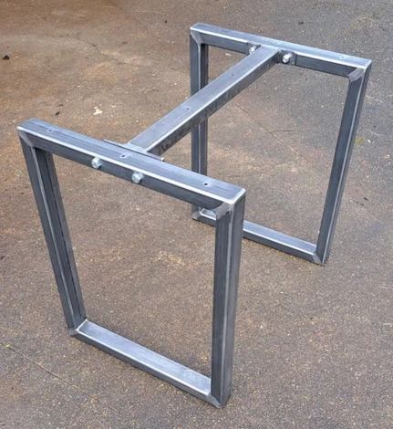
Figure 13: Bolted Aluminium Frame [15]
Bolting provides a strong method of joining aluminium sections while allowing for easy maintenance. Unlike welding, bolting does not introduce thermal distortion. However, there will be high stress concentration due to high bearing load occurring at the bolt holes. Hence, multiple bolt holes are required to distribute the stresses which adds to the overall weight. Additionally, the beams have to be solid to allow proper tightening of fasteners adding to its weight and cost.
Bonded Aluminum Frame
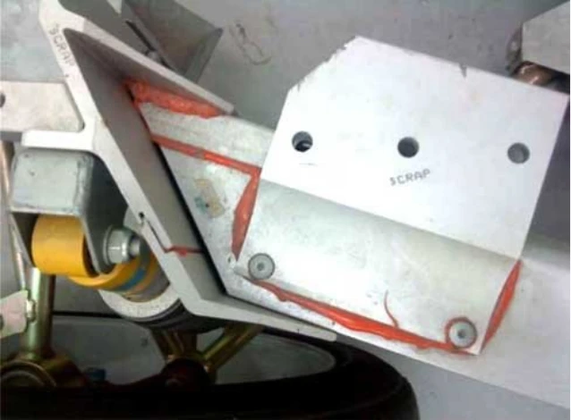
Figure 14: Epoxy bonded Aluminium Frame [16]
Adhesive bonding offers a lightweight and cheaper alternative as hollow aluminium beam could be utilised. Its feasibility in structural applications is demonstrated by the supercar, Lotus Elise, which employs epoxy bonding with rivets to join extruded aluminium sections in its chassis [16]. Given its successful application in automotive structures, a similar joining method was proposed for the dynamometer frame.
A weighted decision matrix was therefore used to evaluate the concepts, as shown in Table 3.
Table 3: Comparison of enclosure type
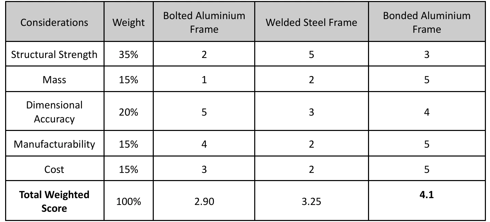
Scores: 1 = Poor, 2 = Below Average, 3 = Moderate, 4 = Good, 5 = Excellent
Based on the evaluation, epoxy-riveted bonding was selected as the proposed joining method. To verify its suitability for dynamometer operation, two epoxy adhesives, 3M DP490 and EPICOTE 3175, will be evaluated through static shear test to assess their load-carrying capacity.
3.6 Power Transmission Concepts
The maximum output torque from the car is 440Nm, which exceeds the maximum allowable input torque of the EMRAX 228. Therefore, a power transmission system is required to reduce the torque transmitted to the motor.
3.6.1 Power Transmission System Design Considerations
Based on our design criteria for the dynamometer, we further specified the power transmission’s design considerations in table 4.
Table 4: Power Transmission System Design Considerations
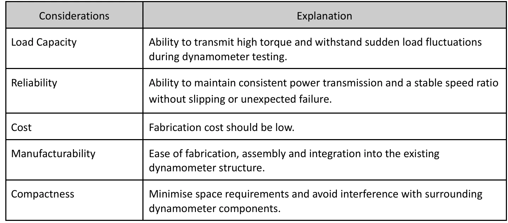
3.6.2 Types of Power Transmission Systems
We considered 3 types of power transmission systems, as seen in table 5.
Table 5: Comparison of Power Transmission Types

A weighted decision matrix was therefore used to evaluate the concepts, as shown in Table 6.
Table 6: Weighted Decision Matrix of Power Transmission Systems
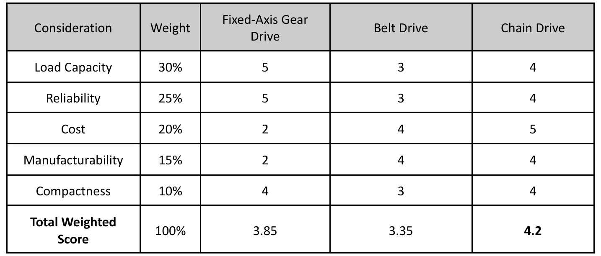
Scores: 1 = Poor, 2 = Below Average, 3 = Moderate, 4 = Good, 5 = Excellent.
Based on the weighted decision matrix, the chain drive achieved the highest score. It was therefore selected as it offers reliable power transmission without slippage, and flexibility in achieving the required gear ratio. Furthermore, its components are available from the FSAE team, making it a more cost-effective solution. Although chain drives require proper alignment, lubrication, and tensioning, these limitations can be addressed through appropriate design and maintenance.
3.7 Tensioner Concept
The chain tensioning mechanism ensures reliable power transmission in the drive transmission system. Proper chain tension is necessary to prevent chain derailment, excessive wear, and vibration during operation. Therefore, different tensioning concepts were evaluated to identify a suitable mechanism for the dynamometer.
3.7.1 Tensioner Design Considerations
Based on our design criteria for the dynamometer, we further specified the frame’s design considerations in table 7.
Table 7: Tensioner Design Considerations

3.7.2 Types of tensioner
We considered 3 types of tensioning mechanisms, as seen in table 8.
Table 8: Comparison of Tensioner Types

A weighted decision matrix was therefore used to evaluate the concepts, as shown in Table 9.
Table 9: Weighted Decision Matrix of Tensioners

The manual take-up tensioner achieved the highest weighted score and was selected for its rigidity, load capacity, and simplicity under high torque and speed.
Although the spring tensioner automatically compensates for chain elongation, it introduces additional complexity and allows shaft movement during operation, which affects transmission stability. Whereas, the floating idler may be susceptible to chain whip under sudden load fluctuations, making it less suitable for high-speed applications. While the manual take-up tensioner requires periodic adjustment, this can be addressed by providing an easily accessible adjustment mechanism.
3.8 Overall System Diagram
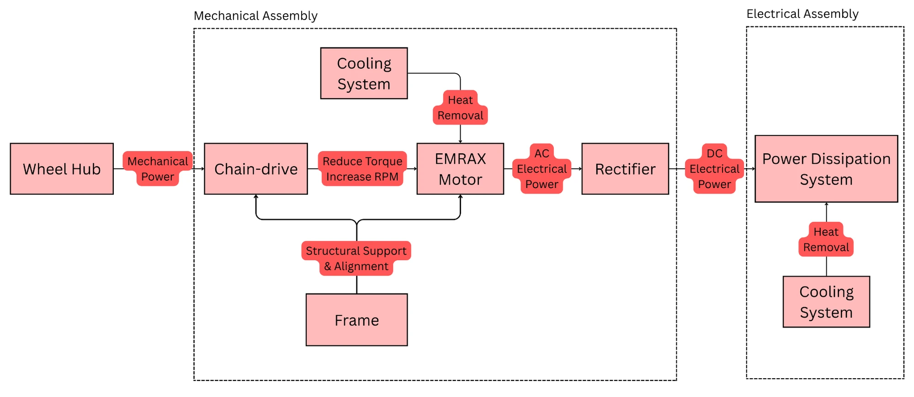
Figure 15: Overall System Diagram
The dynamometer can be split into two overall systems, the mechanical assembly and the electrical assembly. As illustrated in Figure 15, mechanical power from the wheel hub is transmitted to the dynamometer through the chain-drive that reduces torque and increases rotational speed to meet the operating specifications of the dynamometer motor. The dynamometer’s motor operates as a generator, converting the mechanical power into AC electrical power, which is subsequently converted into DC electrical power through a rectifier. The generated electrical energy will then be dissipated through the power resistor dissipation system within the electrical assembly. Additionally, cooling systems will be required for both the mechanical and electrical assemblies to manage heat generated during operation.
4. Detail Design
4.1 Frame
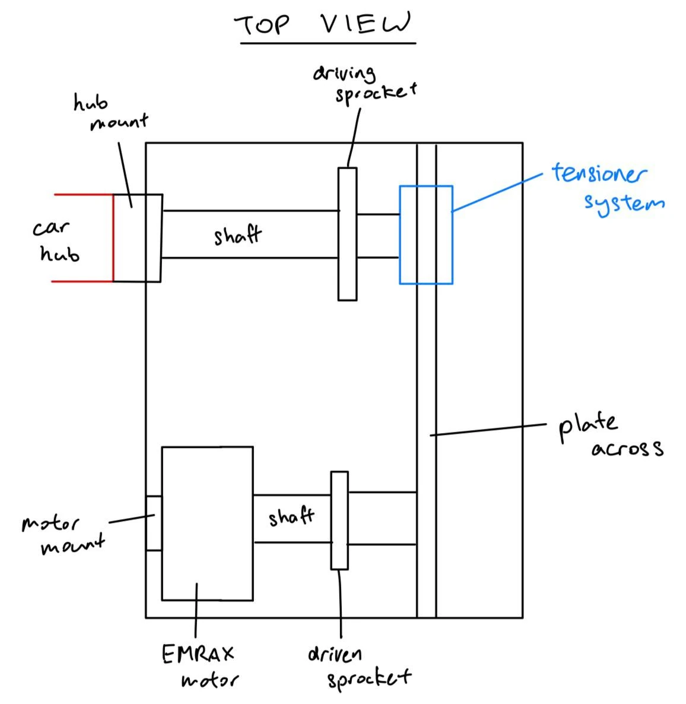
Figure 16: Iteration 1 of frame layout
The first design began with sketching out the overall layout of the components in the frame (Figure 16), which includes the chain drive, motor, shafts and a thick plate across that holds the components. However, mounting the EMRAX onto the wall of the frame significantly constrains its size and reduces the space available for other components. Therefore, the motor was installed at the bottom plate instead (Figure 17). The motor mount we will be using is provided by the FSAE team. Hence, no extra manufacturing costs will be needed.
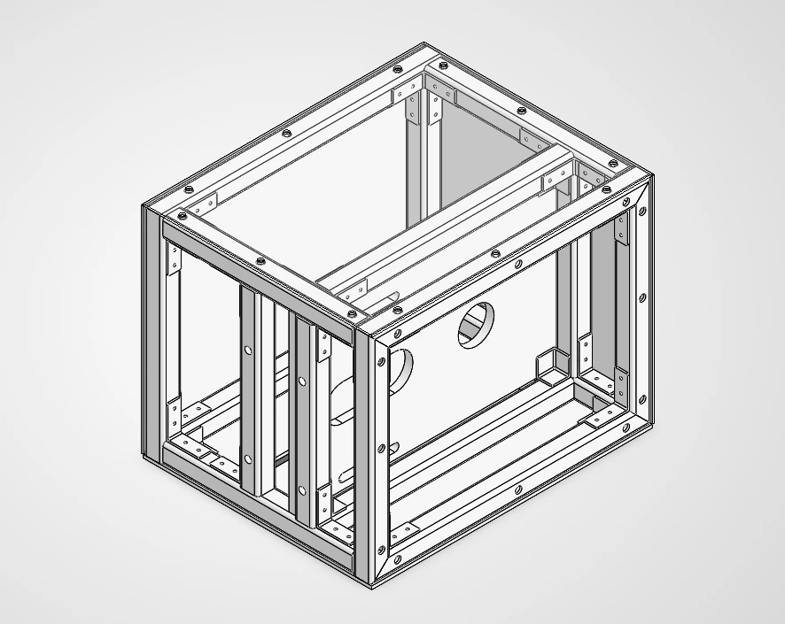
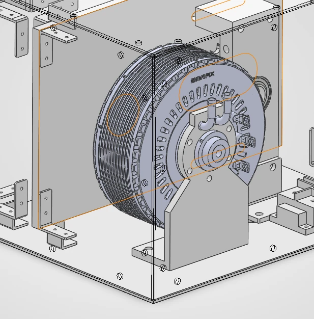
Figure 17: Frame beams (Left), Motor mounted to bottom plate (Right)
For the second iteration, the frame uses a truss structure constructed from hollow 6061-T6 aluminium beams (Figure 17), each with a square cross-section of 31.75mm x 31.75mm and wall thickness of 1.98mm, while two of the beams will be solid to allow for threaded holes for the screw tensioners. However, since the right section of the frame does not support any components, it was removed in order to reduce the weight and make the design more compact.
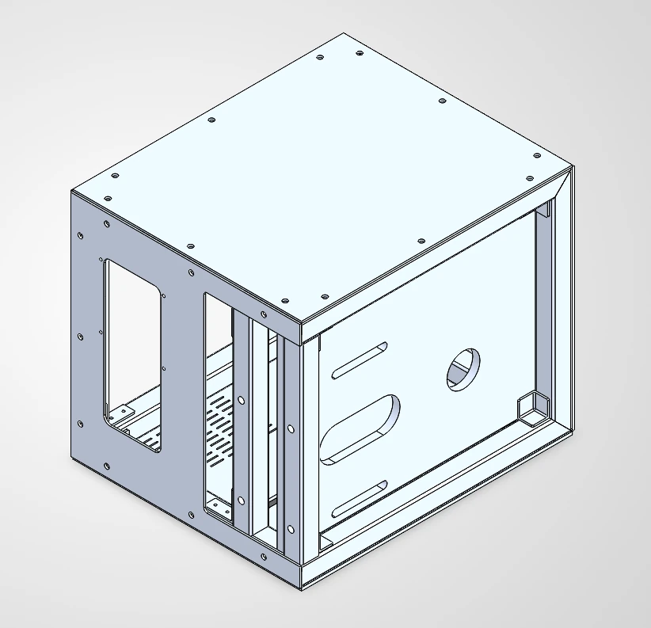
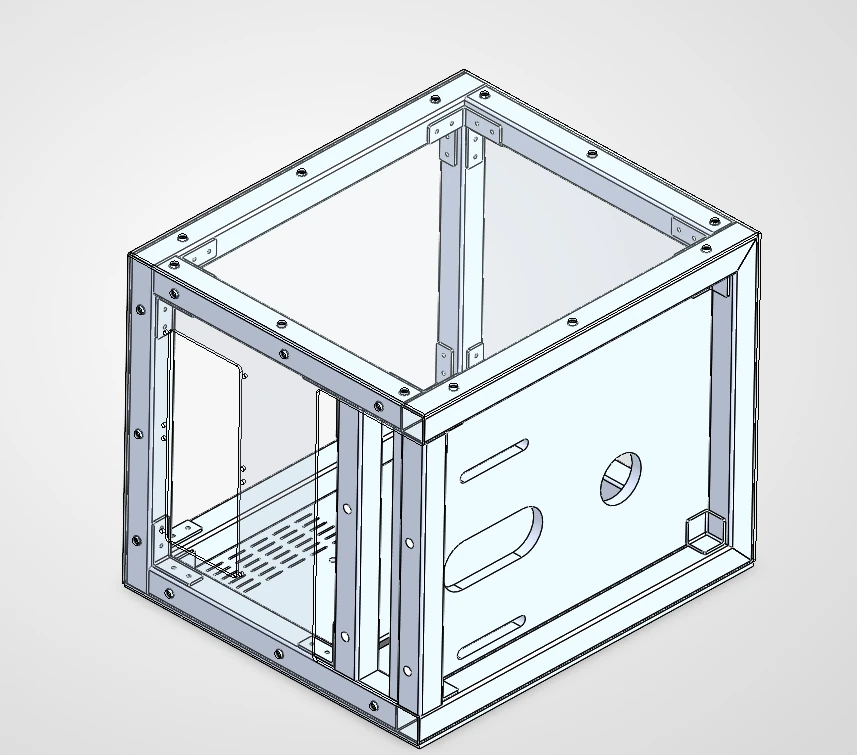
Figure 18: Iteration 3 of frame design
The final design is illustrated in Figure 18, where thin aluminium sheets are used to enclose the frame. As the sheets are not subjected to significant structural loads, they are bolted onto the frame members, allowing them to be easily removed to provide access to internal components for maintenance.
Figure 19: Reinforcement brackets
L brackets, corner brackets, and triangular brackets were added at the joints (Figure 19) to increase the bonded surface area, thereby improving the shear load-carrying capacity and overall strength of the joints.
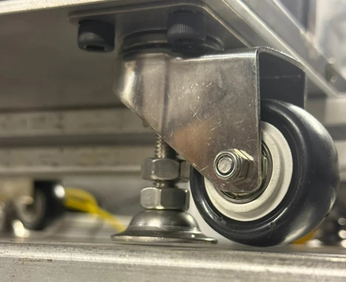
Figure 20: Adjustable leg with caster wheel
Based on the previous year’s design, we included 4 lockable caster wheels for portability and ease of set-up, while providing stability when locked during dynamometer runs. A small caster wheel dimension of 5cm was used to allow for the alignment of the motor and the vehicle’s wheel hub, as it is relatively low. The adjustable leg will allow the dynamometer to have height and tilt adjustments to ensure proper alignment of the dynamometer’s flange and the car’s wheel hub, accommodating to the floor’s unevenness.
4.2 Tensioner
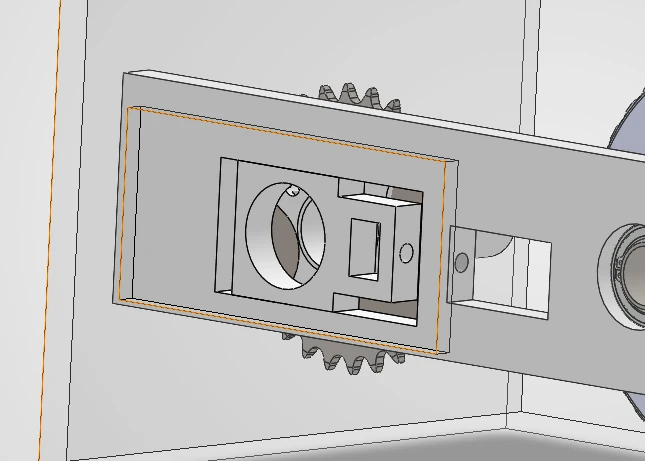
Figure 21: Iteration 1 of tensioner (Left), Screw Tensioner in Conveyor Systems (Right)
The initial tensioner design was based on conventional conveyor tensioning mechanisms (Figure 21). This concept is incorporated into the thick plate in our frame, with an adjustment screw at the centre of the plate to regulate chain tension. However, the required guide rails increased manufacturing and assembly complexity and the screw's central position restricted access for tension adjustment.
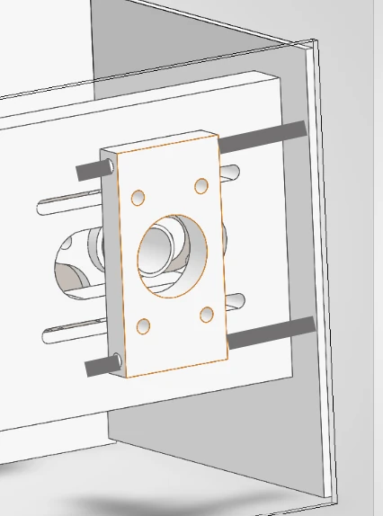
Figure 22: Iteration 2 of the tensioner on one side
The second design introduced a side-mounted tensioner block (Figure 22), secured through four mounting holes and two slots in the plate. This arrangement replaced the guide rails and simplified manufacturing and assembly. Additionally, the adjustment screws at the top and bottom allowed tensioning to be adjusted externally. However, the single-sided tensioner risked twisting and misalignment of the chain-drive under high torque and speed.
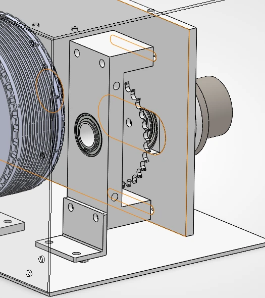
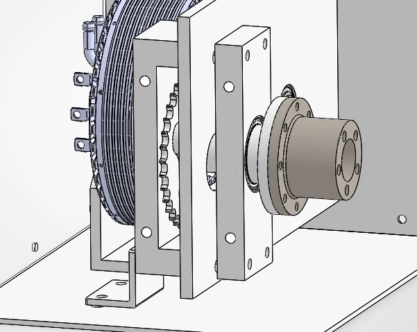
Figure 23: Iteration 3, U-shaped tensioner with L bracket
To address this issue, a U-shaped tensioner was added to the opposite side of the chain-drive (Figure 23). The four mounting holes on both tensioners are aligned, allowing screws to secure them through the slots on the tensioner plate. An L-bracket was also added between the bottom of the U-shaped tensioner and the frame's bottom plate to provide additional support.
4.3 Flange and Shaft Design
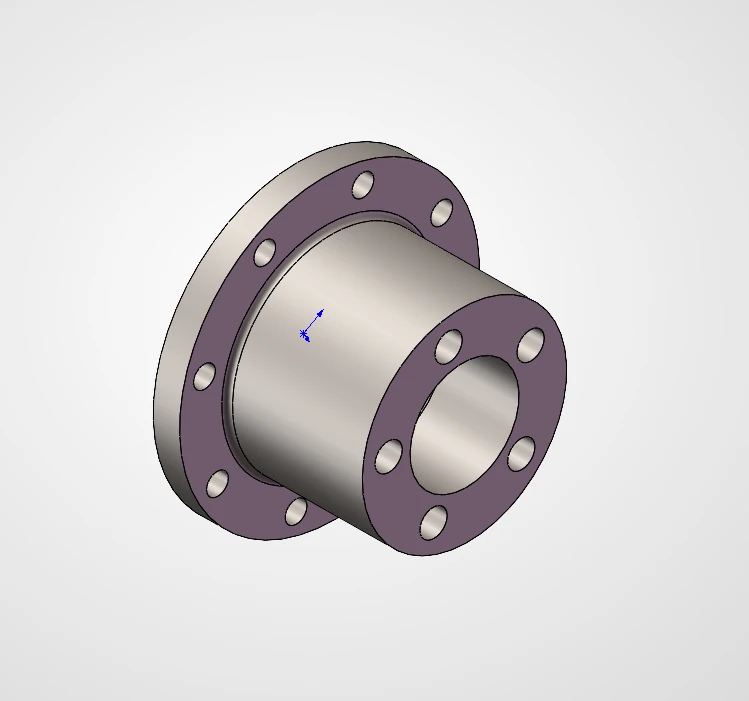
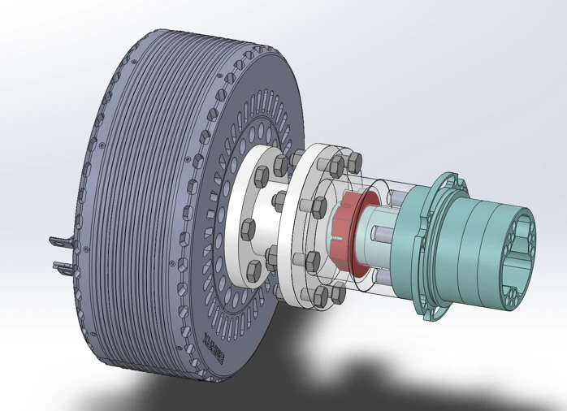
Figure 24: Hub Mount
Building upon the previous year's design, the existing wheel hub mount was retained to connect the wheel hub to the dynamometer. The mount features an internal stepped section to accommodate the wheel hub's lock nut and is secured to the hub using dowel pins (Figure 24). The mount also incorporates a flange that connects to a custom designed flange and shaft. This shaft will hold the chain drive components, including the driving sprocket, sprocket bracket, and four bearings (Figure24).
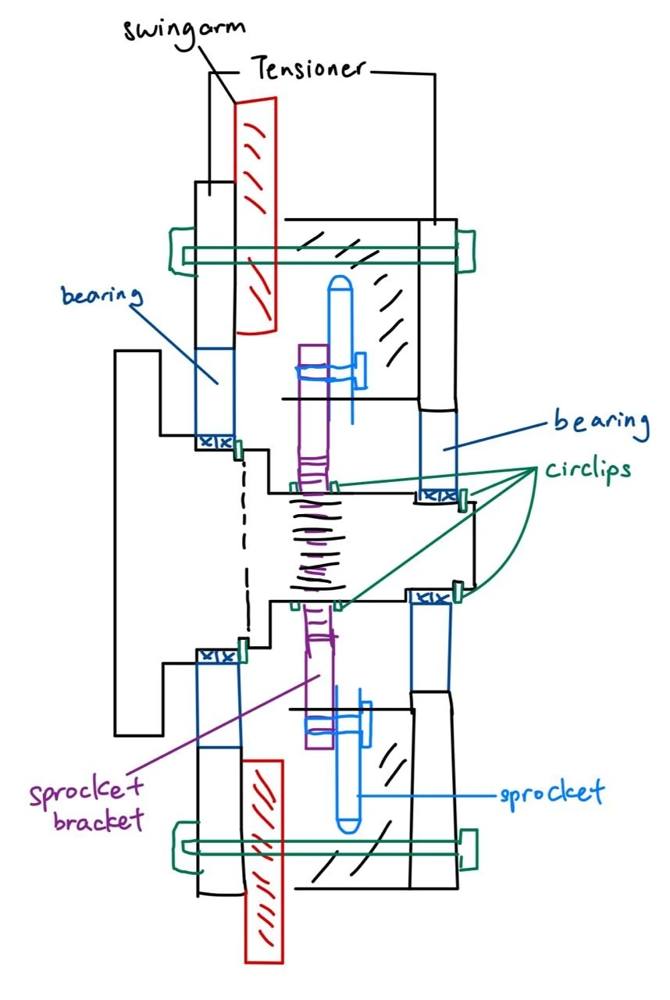
Figure 25: Top view of shaft with components
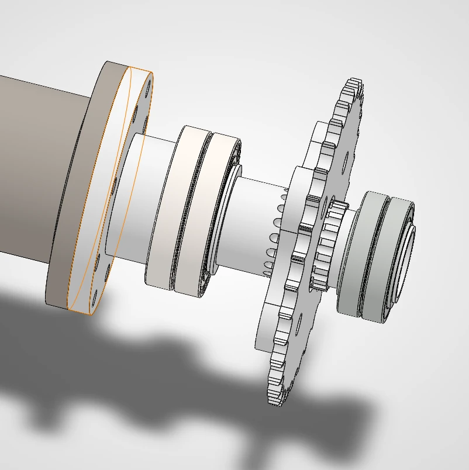
Figure 26: 3D Model of shaft (Left), Shaft with components (Right)
The shaft is supported by a pair of bearings housed within the two tensioners, while its splined section holds the driving sprocket bracket (Figure 26). The sprocket is then secured to the bracket using bolts. All components are held in their axial positions by either a step or circlips.
4.4 Chain-drive design
The two primary design considerations are the sprocket gear ratio, which determines the relationship between motor and wheel hub speeds, and the sprocket centre distance, which affects chain length and tensioning.
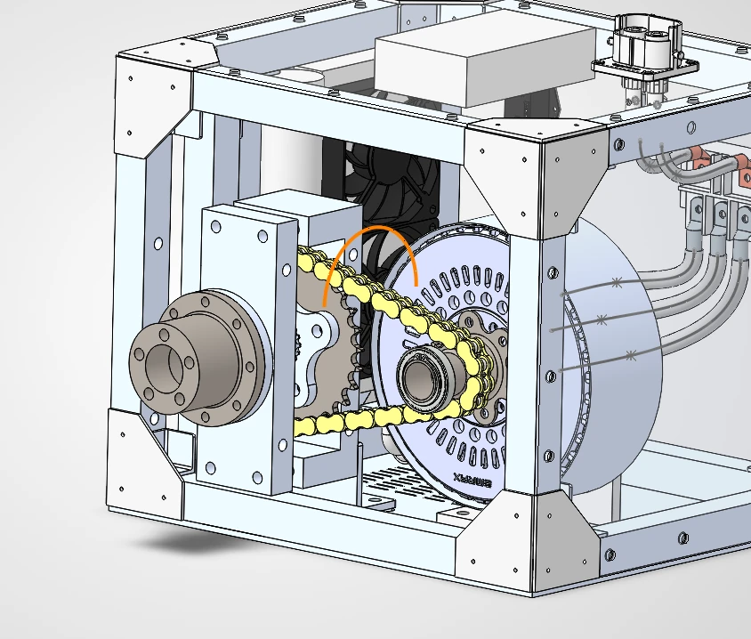
Figure 27 : Chain-drive mechanism
4.4.1 Gear Ratio
As the FSAE race car has a gear drive that ranges between 3 to 4 based on the year’s design, the dynamometer’s gear ratio has to be able to account for the maximum operating conditions of 440 Nm torque or 2167 RPM speed from the car.
Table 10: Comparison of different chain-drive ratios

As seen in table 10, we compared the percentage utilisation of the maximum allowable input torque and speed for the EMRAX motor, and concluded that a gear ratio of 2.5:1 balances both torque and speed similarly.
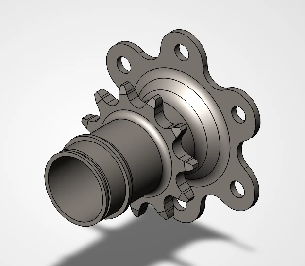
Figure 28: 11 Teeth Custom Sprocket
The FSAE team has a custom 4340 steel 11 teeth sprocket with an inbuilt mount to the EMRAX and a shaft for the bearing which fits our requirement (Figure 28). As the car uses the same sprocket, it will be strong enough for the dynamometer as the operating conditions are similar. As the team had extra sprockets, it will be used as the small driven sprocket with no additional cost.
For a driven sprocket of 11 teeth and a chosen gear ratio of 2.5:1, the driven sprocket would therefore be 27.5 teeth. We rounded up to use a driven sprocket of 28 teeth, which leads to a gear ratio of 2.55:1.
4.4.2 Center distance
The minimal sprocket centre distance was used to achieve a compact chain-drive assembly while maintaining sufficient clearance between the sprockets.
A 520 roller chain with a pitch of 15.875 mm was selected.
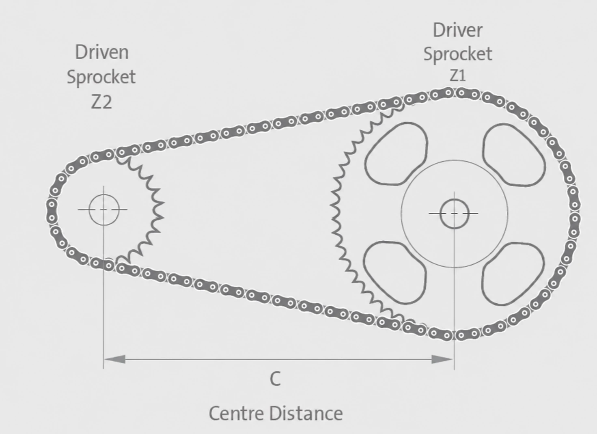
Figure 29: Chain-drive configuration illustrating the sprocket centre distance [23]
Based on the sprocket dimensions, the theoretical minimum centre distance was calculated to be 112.7 mm, which is 34.73 pitches for the chain. However, due to the assembly's structural constraints, using Renold's chain length and centre distance equations [23], a 42-pitch chain was required. Thus, the final calculated centre distance was 173.27 mm, providing a compact chain-drive layout. Detailed calculations are provided in Appendix G.
4.5 Bearing
Bearing selection is primarily determined by the operating conditions of the application, including the radial and axial loads acting on the bearing and its operating speed. These parameters influence the expected fatigue life of the bearing. For this project, the bearing life requirement was determined by using the internal bearings of the EMRAX 228 motor as a benchmark. The dynamometer bearings are selected to achieve an equivalent or greater theoretical bearing life under the specified operating conditions. This ensures that bearing failure within the dynamometer is not expected to occur before failure of the EMRAX motor bearings, thereby reducing the likelihood of premature bearing failure within our system.
Hence, the NSK 6907V and NSK 6910VVCM bearings were selected. The corresponding bearing life calculations are provided in Appendix L. An additional consideration in the selection of these bearings was that it is already available to us from the FSAE team thus, cost can be omitted from the project budget, while still satisfying the required performance criteria.
4.6 EMRAX Cooling
The EMRAX motor being used is the combined-cooling type, where liquid cooling was used in our system for more effective heat dissipation compared to air cooling. For liquid cooling, the manufacturer specifies a minimum coolant flow rate of 6 L/min and a maximum coolant temperature of 50°C [7], forming the primary cooling system design constraints. Therefore, the proposed cooling system consists of a 240 mm radiator, dual cooling fans, a coolant reservoir, and a circulation pump, integrated into a compact assembly.
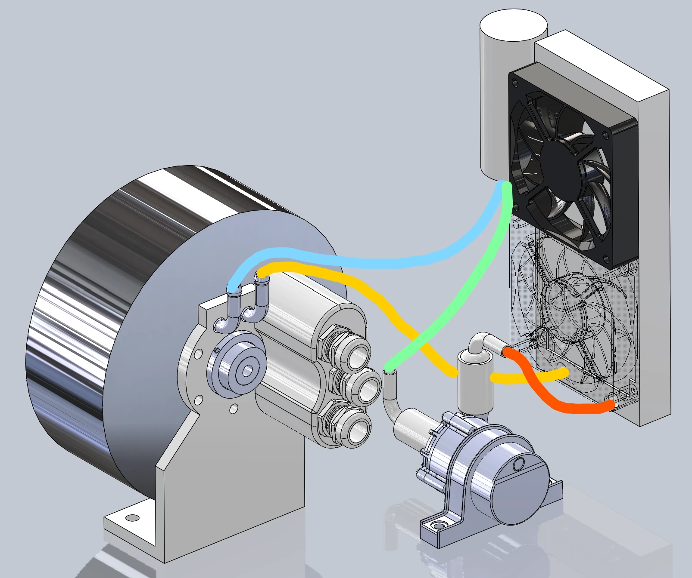
Figure 30: EMRAX 228 liquid cooling circuit
As illustrated in Figure 30, coolant from the pump first passes through the radiator, where it is cooled before entering the EMRAX motor to absorb the heat generated during operation. The heated coolant then flows into the reservoir before returning to the pump, completing the closed-loop cooling circuit. The reservoir is positioned above and directly upstream of the pump to provide a continuous coolant supply to the pump inlet through gravity. An EBP40 circulation pump and 240mm radiator was used due to the availability of it from the FSAE team and suitability for our requirements. Cooling component specifications are provided in Appendix H.
4.7 Power Resistor Dissipation
The dynamometer system operates with a DC bus voltage of 400V and a total power dissipation requirement of 80 kW, which gives rise to an equivalent 2Ω requirement. With two dynamometers on each rear wheel, each unit is required to dissipate up to 40 kW, with an equivalent resistance of 1Ω.
To satisfy these requirements, 1 kW resistors were selected. Using 50 resistors will give a combined rated power dissipation capacity of 50 kW, which provides an additional 10 kW of rated capacity to accommodate potential load fluctuations.
In order to have an equivalent resistance of 1Ω, the 50 resistors will be connected in parallel, and each resistor will require a resistance of 50Ω. Hence, 50Ω power resistors rated at 1 kW each were selected.
Resistor Cooling System Design
As the electrical energy is converted into heat, an effective cooling system is required to prevent the resistors from overheating. Two designs were developed to explore suitable cooling arrangements.
Design 1
The initial design consists of vertically stacked resistors supported by an aluminium frame, with multiple PC fans mounted along one side to provide forced convection cooling. However, the large amount of fans used increases the cost and complexity of the system in terms of wiring, installation, and maintenance.
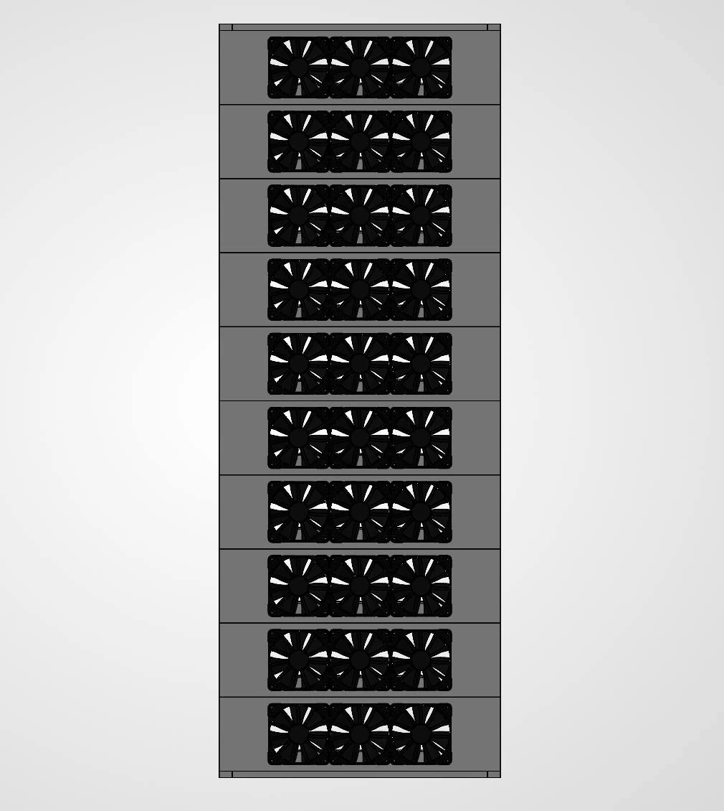
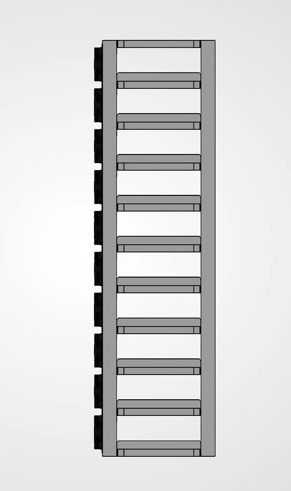
Figure 31: Resistor bank design incorporating multiple PC cooling fans
Design 2
The second design adopted a more compact resistor arrangement enclosed within a housing. A single 220 V industrial blower was proposed to replace the multiple PC fans, simplifying the cooling system and cost.
The enclosure was designed to direct airflow through the resistor bank, allowing heat generated by the resistors to be carried away through forced convection.
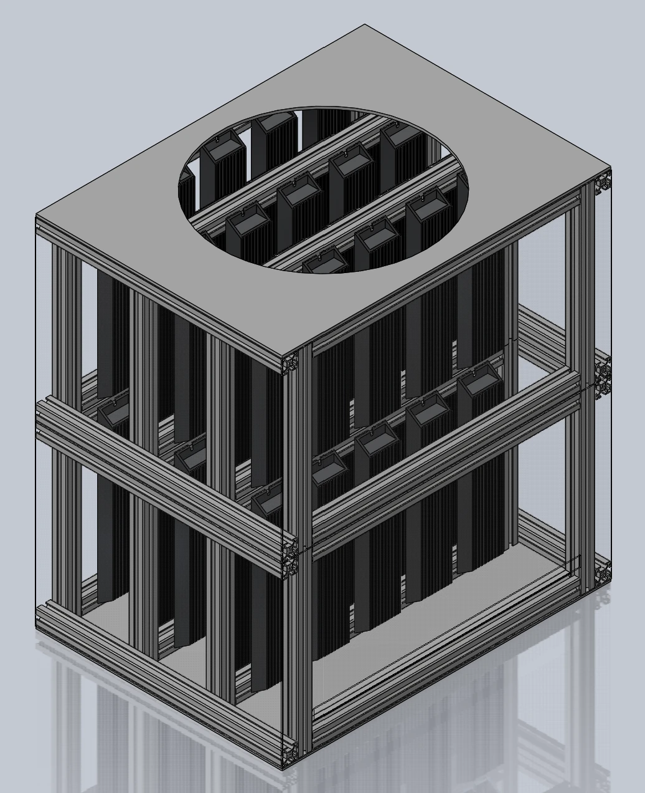
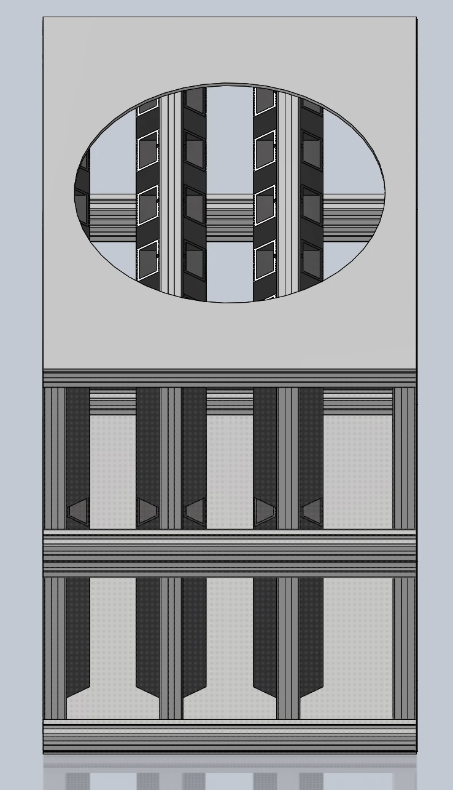
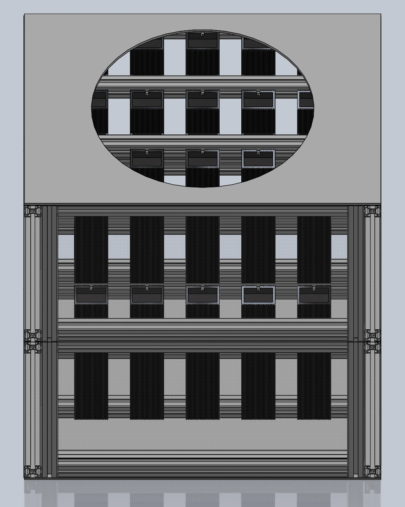
Figure 32: Resistor bank design incorporating an industrial blower
Selection of the design will be based on thermal simulations and experimental testing conducted next semester to evaluate the cooling performance of the proposed designs.
5. Epoxy Bonding Test
To justify the proposed epoxy bonding concept and validate its suitability for the dynamometer frame, static lap-shear testing was conducted to evaluate two structural adhesives available in the workshop: 3M DP490 and EPICOTE 3175.
Based on the ISO 4587 standard [24], we conducted a static lap-shear test to determine the maximum load and apparent shear strength of the adhesive joint under static tensile loading.
Table 11: Static tensile test Results for EPICOTE 3175
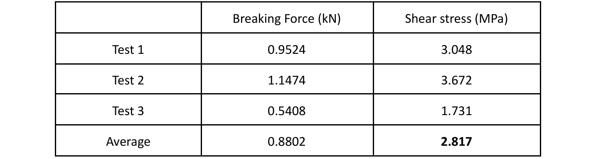
Table 12: Static tensile test Results for 3M DP490

Based on the experimental results in table 11 and 12, 3M DP490 achieved a significantly higher average lap-shear strength of 14.841 MPa compared to EPICOTE 3175 at 2.817 MPa. Therefore, 3M DP490 was selected as the structural adhesive for the dynamometer frame. Experimental Procedure, preparation and calculation can be found in Appendix M.
As joints are often critical points of failure in truss frames, further calculations were carried out to compare the strength of the bonded joints against that of the Aluminium 6061-T6 hollow beams, which will be shown in Appendix N.
The objective of this comparison was to demonstrate that the epoxy-bonded joints could achieve a strength equal to, or greater than that of the aluminium beams. If the calculated maximum shear force of the bonded joint exceeds the beam's tensile yield strength, the joint would be expected to withstand a greater load than the beam under assumed loading conditions, supporting the suitability of epoxy bonding for the dynamometer frame. The respective joints were calculated and verified (Figure 33).
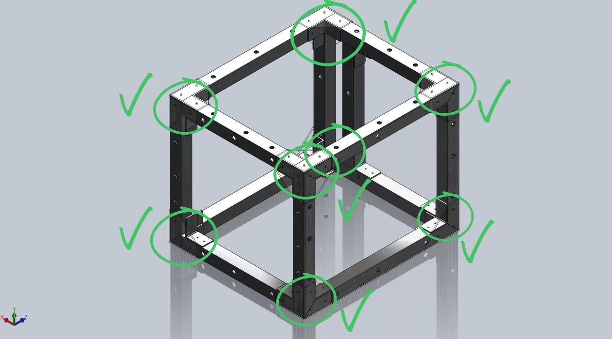
Figure 33: Verified Tensile Forces at Joints
6. Finite Element Analysis
6.1 Static Structural Simulation
Static structural simulations were conducted to evaluate the dynamometer's ability to withstand the maximum applied torque of 440 Nm and vehicle weight.
Figure 34: Simulation flow for subsystems
Due to the complexity of the system and the large number of components, the dynamometer was divided into several subsystems (Figure 34). This approach allowed each subsystem to be analysed individually, making it easier to identify and resolve potential issues before integrating them into the complete system for final structural analysis.
6.2 Problems Faced
Due to the complexity and varying dimensions of the components, beam (1D), shell (2D), and solid (3D) elements were used. Modelling the entire assembly with solid elements would generate excessive nodes and elements, exceeding the available computational resources.
Figure 35: Surface and Beam mesh connection
However, connecting beam and shell elements was challenging because the beam centreline was offset by 15.875 mm from the shell surface (Figure 35), preventing coincident connections. To resolve this, split lines were created at the attachment locations, and fixed joints were established between the split edges and beam elements to transfer loads and moments.
A significant amount of time was dedicated to preparing and simulating the chain-drive assembly due to its complexity. The chain had to be accurately modelled in CAD, with each individual link positioned and mated to the adjacent links. The chain was then assembled around the sprockets, ensuring proper engagement with the sprocket teeth while ensuring no geometric interference between components.
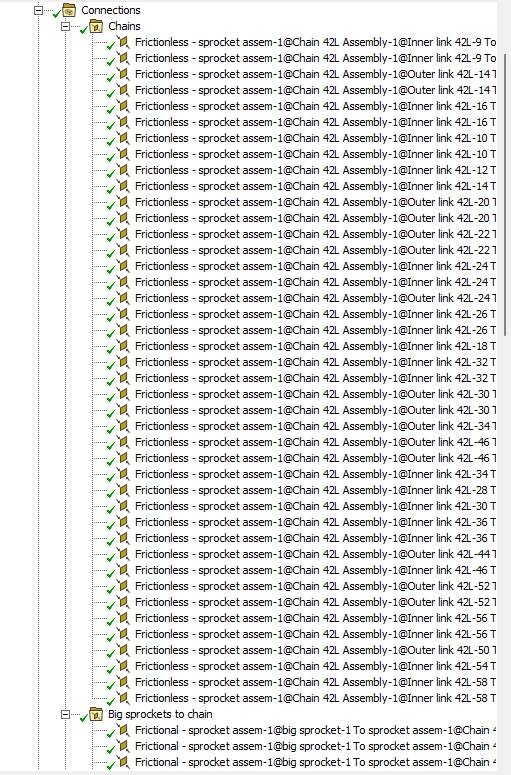
Figure 36: Chain assembly connections
Furthermore, in ANSYS Mechanical, contacts were manually defined between adjacent links and both sprockets, resulting in numerous contact regions, further increasing the complexity of the simulation (Figure 36).
Another major challenge was the lack of references for static structural chain-drive simulations, requiring extensive trial and error to determine suitable ANSYS contact settings and boundary conditions. With each simulation taking approximately two hours, every unsuccessful attempt required further troubleshooting and another lengthy simulation, making the process particularly time-consuming and challenging.
Figure 37: Chain simulation results
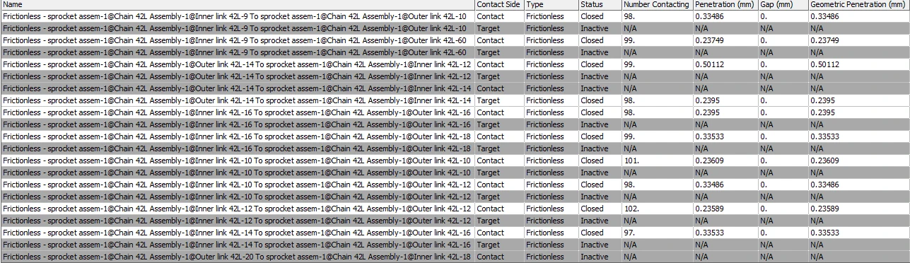
Figure 38: Investigation on geometric penetration of the chain
In addition, high stress concentrations were observed at the interfaces between adjacent chain links, as shown in Figure 37. Further investigation suggested that these unusually high stress values were caused by insufficient mesh refinement and geometric penetration at the contact interfaces, rather than solely by the actual structural loading as seen in Figure 38. However, further mesh refinement was restricted by the available computational processing power and memory.
As the primary objective of this simulation was to evaluate the structural strength of the overall dynamometer assembly, emphasis was placed on ensuring that the chain could transmit reaction forces to the surrounding components for subsequent stress analysis. Furthermore, the same chain is used by the FSAE race car under comparable operating conditions, providing some confidence in its suitability.
6.3 Subsystem Simulation Results
6.3.1 Frame and Surface Subsystem
Figure 39: Frame and Surface Subsystem setup
Figure 40: Simulation results for Frame and Surface Subsystem
As shown in Figure 39, an arbitrary force was applied to the top plate while the bottom beams were fixed. The results (Figure 40) confirmed load transfer between shell and beam elements, with stresses distributed throughout the structure. The beams carried most of the structural loads, while relatively low stresses were observed in the unloaded plates, as intended.
6.3.2 Chain drive Subsystem
Figure 41: Chain drive Subsystem setup
For the chain-drive subsystem (Figure 41), a maximum torque of 440 Nm was applied at the hub mount (B). Fixed supports were applied at the two frame mounting locations (A) to obtain reaction forces, while a cylindrical support at the sprocket (C) restricted radial movement and rotation to represent a static loading condition.
Figures 42 to 47 present the simulation results of the individual components. The calculated factors of safety were high, indicating their suitability under the assumed static loading conditions.
Figure 42: Simulation results of a tensioner plate
Figure 43: Simulation results of a shaft
Figure 44: Simulation results of a tensioner
Figure 45: Simulation results of a hub mount
Figure 46: Simulation results of a sprocket bracket
Figure 47: Deformation of the tensioner plate and tensioner.
6.4 Future Simulation work
Figure 48: Expected setup of full system
The final static structural simulation will integrate all mechanical components into a complete assembly (Figure 48). Fixed supports will be applied at the four bottom-frame corners where the castor wheels will be mounted, with a maximum hub torque of 440 Nm and a downward force of 490.5 N representing a 50 kg vehicle load.
The results will be used to evaluate the overall structural strength and rigidity through stress distribution, deformation, and factors of safety.
7. Project Plan
For the following semester, the main objective will be to complete the static structural simulation to validate our design. Additionally, thermal and airflow simulations of the power resistor system will be conducted in the following semester to evaluate its heat dissipation and cooling requirements, supporting the final selection and design of the electrical system.
Once the design has been validated, we will proceed with the fabrication and assembly of the dynamometer, followed by structural and fixed-load testing to verify its performance. Finally, we will complete project documentation and conclude phases 1 and 2 of the dynamometer development.
Figure 49: Gantt Chart for Semester 2
8. Conclusion
Through this semester, we have developed an understanding of the problem statement, stakeholder requirements and project constraints, and hence established clear design objectives for the dynamometer.
Based on these requirements, various design concepts were generated and evaluated before the most suitable solutions were selected. The project then progressed into the detail design, where engineering calculations, experimental testing and preliminary simulations were conducted to support and assess our design decisions.
Although several challenges were encountered throughout the design process, these were addressed through further analysis and design refinements. Overall, the project has made significant progress, with the preliminary design established and key components evaluated. Moving forward, the focus will be on completing the remaining simulations, finalising the design, and proceeding with fabrication, assembly and testing in the following semester.
9. Individual Areas of Work
References
Wayne State Formula SAE - Warrior Racing, “Dyno time! Huge thanks goes out to Kettering University Formula SAE for letting us use their chassis dyno today!,” Facebook, Oct. 09, 2017. https://www.facebook.com/WSUWarriorRacing/posts/dyno-time-huge-thanks-goes-out-to-kettering-university-formula-sae-for-letting-u/1602159859804565/
Wikipedia contributors, “Water brake,” Wikipedia, Mar. 20, 2026. https://en.wikipedia.org/wiki/Water_brake (accessed Nov. 08, 2026).
“Regenerative Braking Testing on Dynamometer,” Apr. 09, 2021. https://thebrakereport.com/regenerative-braking-testing-on-dynamometer-part-1-of-4/ (accessed Nov. 08, 2026).
G. M. Smith, “A comprehensive guide to dynamometers: types, uses, and benefits,” Data Acquisition | Test and Measurement Solutions, Nov. 04, 2026. https://dewesoft.com/blog/dynamometers-guide
“1.5kw 5kw 10kw 11kw 15kw 20kw 25kw 40kw 50kw 80kw 150kw 7.5 200 kW 3000W 10000 20000 Watt15000W Three Phase AC Electric Induction motor.” https://xinnuo.en.made-in-china.com/product/paWUSPFvaJrz/China-1-5kw-5kw-10kw-11kw-15kw-20kw-25kw-40kw-50kw-80kw-150kw-7-5-200-Kw-3000W-10000-20000-Watt15000W-Three-Phase-AC-Electric-Induction-Motor.html?pv_id=1ja0ep2u2b26&faw_id=1ja0ep5cl944&bv_id=1ja0f3jbacf1&pbv_id=1ja0ep1a7caa
“Electric Forklift Motor: AC Traction vs DC Pump Guide.” https://www.baoluomotor.com/news/electric-forklift-motor-selection.html
“228 (124kW | 220Nm) - EMRAX,” EMRAX, Aug. 02, 2026. https://emrax.com/e-motors/emrax-228/
“HoATS-300W-80R-5%.” https://www.digikey.sg/en/products/detail/milliohm-electronics/HoATS-300W-80R-5/29477896
“High-power DC electronic load,” ITECH. [Online]. Available: https://www.itechate.com/
D. Dritsas, “The 8 best portable power Stations for outages and outings,” Popular Mechanics, Nov. 06, 2026. [Online]. Available: https://www.popularmechanics.com/home/a32825530/best-portable-power-stations/
booniesmetalfab, “Swipe to see the steel table frame we made.,” Instagram, Jan. 25, 2024. https://www.instagram.com/p/C2fUaBbLxTA/
“Tall Stainless Steel Multi-Function Buffet Display Box | Bon Chef,” Bon Chef, Inc., Feb. 16, 2022. https://www.bonchef.com/product/buffet/display/buffet-in-a-box/tall-stainless-steel-multi-function-box/
“Guide to DIY with T-Slot Aluminum,” Apr. 05, 2022. https://www.reef2reef.com/threads/guide-to-diy-with-t-slot-aluminum.903885/page-6
B. Steel, “A guide to steel structure welding. Methods and inspection techniques,” Nov. 08, 2026. https://bmbsteel.com.vn/en/a-guide-to-steel-structure-welding-methods-and-inspection-techniques
“Metal Table Frame Retro Industrial Steel Desk Bar Breakfast Island Bolted Support Bar | Industrial table frame, Angle iron table frame, Table frames for any table top,” Pinterest. https://www.pinterest.com/pin/569212840424709699/
J. C. England, H. Hadavinia, D. R. Marchant, and A. Aboutorabi, “Design of automotive metal and composite chassis structures,” Recent Patents on Mechanical Engineering, vol. 3, no. 3, pp. 211–225, Nov. 2010, doi: 10.2174/2212797611003030211.
Nico, “Application of Gear Drives Across Industries,” Chamol Gear, Jun. 02, 2026. https://www.chamolgear.com/application-of-gear-drive/
S. Sild and F. Drives, “Belt drives & types of belts,” Fractory, Sep. 14, 2026. https://fractory.com/belt-drives/
S. Sabhadiya, “What is Chain Drive?- Types, and Application - The Engineering Choice,” The Engineering Choice, Nov. 25, 2024. https://www.theengineeringchoice.org/what-is-chain-drive/
A. I. Supplies, “Chain Tensioner Guide: Roller chain tensioning Methods,” AIMS Industrial Supplies, Sep. 29, 2026. https://aimsindustrial.com.au/blogs/product-guides/chain-tensioner-guide?srsltid=AfmBOooI2HPZLWpBLNXYRAsOhr4tQidt1CTMcuhSgBJ_8DRt2pLojIzw
“Examples of use: ROLL-RING chain tensioner - ROLL-RING,” ROLL-RING, Mar. 29, 2016. https://www.roll-ring.com/dt_gallery/examples-of-use-roll-ring-chain-tensioner/?lang=en
“Belt Tensioners - Spring-Loaded.” https://sg.misumi-ec.com/vona2/detail/110302578560/?srsltid=AYCX9vJf3BTiIPkKQz4Yt6TNDs10Yt75eOLaX7Wij4ksSbq6uqoyc5G-
Renold, Transmission Chain: Installation, maintenance & designer guide.
International Organization for Standardization, “Adhesives — Determination of tensile lap-shear strength of rigid-to-rigid bonded assemblies,” International Organization for Standardization, ISO 4587:2003, Mar. 2003. [PDF]. Available: https://standards.iteh.ai/catalog/standards/sist/c0cd7737-fbe9-4a2a-8f73-3305d3a5430f/iso-4587-2003
WestCoastSuperFastHPE, “Basic tenets of a water brake dynamometer operation,” Westech Performance Group, Apr. 24, 2022. https://westechperformance.com/2022/03/14/basic-tenets-of-a-water-brake-dynamometer-operation/
R. Dickson, “Friction Machine: Torque-Arm Brake Power calculator,” Firgelli Automations, Oct. 06, 2026. https://www.firgelliauto.com/blogs/mechanisms/friction-machine?srsltid=AU7gw4XbIiPV8GEqODPEMOUo0jQhuoRoPI7Q3mXmw-ueW1ChBZszIz2A
A. Mehrotra and MIT Biomimetic Robotics Lab, “A brief, informal introduction to motor testing,” season-01 2022. [Online]. Available: https://evt.mit.edu/textbooks/Dynos_for_Dummies.pdf
“Can I be paid for excess solar-generated electricity sold back to the grid?” https://www.ema.gov.sg/resources/faqs/solar/solar-installation-guide/can-i-be-paid-for-excess-solar-generated-electricity-sold-back-to-the-grid
“EBP40 - ELECTRIC BOOSTER PUMP KIT (12V) (9000).” https://daviescraig.com.au/product/ebp40-electric-booster-pump-12v-9040?srsltid=AfmBOophRRtb81qQ-DIhg5Sl43Br0attjBpk-RnMYvD41fzjx8gqSrOz
“DIYhz Liquid Cooling Computer Radiator, Aluminum Heat Exchanger with 12 Tubes, 240mm G1/4 Thread CPU Heat Sink, PC, Laser, Liquid Cooling System, 12V DC, Black : Amazon.sg: Electronics.” https://www.amazon.sg/DIYhz-Aluminum-Cooling-Radiator-Fanless/dp/B08DMSVMRM?th=1
“Electricity tariff Singapore.” https://www.spgroup.com.sg/our-services/utilities/tariff-information
SOLARTODO LIMITED, “50kWh Off-Grid Microgrid LFP - 100kW Containerized BESS,” SOLARTODO, Jul. 09, 2026. https://solartodo.com/products/energy-storage/energy-storage-50kwh-off-grid-microgrid-lfp-2026-07-09
“HUAWEI SUN2000-100 KTL-M1.” https://www.europe-solarstore.com/huawei-sun2000-100-ktl-m1.html
NSK Europe, “Bearing life: Calculating the basic fatigue life expectancy of rolling bearings,” NSK Europe, TI/E/0102. [Online]. Available: https://www.nsk.com/content/dam/nsk/eu/en_gb/documents/bearings-europe/P_TI-0102_EN.pdf
Appendix A - EMRAX Specification
Figure 50: Emrax 228 Specification [7]
Figure 51: Emrax 228 Specification [7]
Figure 52: Emrax 228 Specification [7]
Appendix B - Dynapack DAQ53 Quotation Prices
Figure 53: Quotation for commercial dynamometer
Appendix C - Types of Hub Dynamometers
Table 13: Comparison of dynamometers
Appendix D - Types of Motors
Table 14: Comparison of motor type
Appendix E - Power Dissipation Systems
Table 15: Comparison of Power Dissipation Method
Appendix F - Enclosure Types
Table 16: Comparison of enclosure type
Appendix G - Chain Drive Calculations
Figure 54: Center distance of Chain drive
The 520 chain has a pitch of
The driver and driven sprockets have 28 and 11 teeth, respectively:
The outer radii of the two sprockets are measured to be:
Therefore, the theoretical minimum centre distance required to prevent physical interference between the sprockets is:
Therefore,
Since a compact drivetrain was desired, this minimum value was initially used as the contemplated centre distance.
Using the Renold chain-length equation,
Figure 55: Renold chain-length equation
Substituting the values in gives,
= 34.73 pitches
This gives us the minimum number of chain links that we will use. Additionally, a roller chain must contain a whole number of pitches, and Renold recommends the use of an even number of pitches to avoid the use of a cranked link. Furthermore, for optimum wear life, Renold states that it is recommended that centre distance between two sprockets should be within 30-50 times the chain pitch. Due to structural constraints of the components, we have identified the number of chain links to be L = 42 pitches.
Using Renold's centre-distance equation,
Figure 56: Renold centre-distance equation
Gives,
= 173.27mm
Thus, a 42-pitch chain and centre distance of 173.27 mm were adopted for the final design, providing adequate sprocket clearance while maintaining a relatively compact drivetrain layout.
Appendix H – Cooling Specification and Component Selection
EMRAX 228 Cooling Requirements
Figure 57: Emrax 228 cooling specification [7]
Figure 58: EBP40 Pump specification [29] (Left), Radiator dimension [30] (Right)
Appendix I – Payback Period Analysis for Power bank
Payback Period Analysis for Battery Energy Storage
Taking the two extreme operating conditions of the FSAE vehicle and accounting for the dynamometer's gear ratio of 2.5:1, the EMRAX 228 will operate at either 176 Nm at 4062 RPM or 132 Nm at 5417 RPM. Both conditions result in approximately the same mechanical power.
Mechanical power:
The FSAE team requires the dynamometer to operate for 15 minutes per week. Assuming continuous full-load operation throughout each test, the annual energy generated is:
Energy (per test) = 15/60 x 74.9 = 18.7 kWh
Energy (annual) = 18.7 x 52 = 973.7 kWh/year
Based on the Singapore regulated electricity tariff of S$0.3116/kWh (including GST) for October–December 2026 [31], and assuming 100% energy recovery efficiency, the maximum annual electricity savings are: Payback = 973.7 x 0.3116 = $303.4/year
Battery Selection
The battery must accommodate approximately 75 kW of charging power and 18.7 kWh of energy per test. Therefore, An industrial high-power lithium iron phosphate (LiFePO₄) battery energy storage system is considered due to its ability to support high charging rates with appropriate battery management and thermal protection. A commercial 50kWh/100kW BESS is sold at US$8000-10600 [32].
For this preliminary analysis, we take an : $10200SGD
Payback duration would be $10200 / $303.4 = 33.6 years
The estimated payback period is approximately 34 years, even under the ideal assumption of 100% energy recovery. In practice, the payback period would be longer due to energy conversion losses, additional power electronics, maintenance and battery degradation. Hence, battery energy storage is not economically justified for the expected operating frequency of the dynamometer.
Appendix J — Payback Period Analysis for Regenerative Power
Taking the mechanical power calculated in Appendix D of 74.9 kW and the FSAE team's requirement of 15 minutes of operation per week, the annual energy generated is approximately 973.7 kWh/year.
Assuming 100% energy recovery efficiency and an electricity selling price of S$0.2581/kWh, the maximum annual revenue from exporting electricity to Singapore's power grid is:
Payback revenue = 973.7 x 0.2581 = $251.31
Grid-Tied Inverter Selection
To return the generated electricity to the power grid, a grid-tied inverter is required to convert the rectified DC voltage into grid-compatible AC electricity. A 100 kW Huawei SUN2000-100KTL-M1 three-phase grid-tied inverter was considered, with a listed price of €5,625.00 [33].
For this preliminary analysis, we take an : ≃ $8000SGD
Payback duration would be $8000 / $251.31 = 31.8 years
The estimated payback period is approximately 32 years , even under the ideal assumption of 100% energy recovery. In practice, the payback period would be longer due to additional power conversion equipment, grid connection and protection requirements, installation costs and energy losses. In addition regulatory approval is required to export electricity generated by the dynamometer to Singapore's power grid. The FSAE team had previously applied for approval to implement a regenerative power system, but the application was unsuccessful. Therefore this option is ruled out.
Appendix K – Cost Analysis for Power Resistor Dissipation
The power resistor concept dissipates the electrical energy generated by the dynamometer as heat. Based on the mechanical power calculated in Appendix A, the dynamometer operates at approximately 74.9 kW under full-load conditions.
The selected resistor model is the RXLG-1kW aluminium-housed braking resistor, rated at 1 kW per unit. A total of 100 resistors are considered, with 50 resistors allocated to each wheel, providing a combined nominal dissipation capacity of 100 kW. However, as the scope of this project is limited to building a one side of the dynamometer, only 50 resistors are required, providing a nominal dissipation capacity of 50 kW.
A commercial RXLG-1kW resistor is listed at SGD16.50 per unit. The total cost needed for this project would be $16.50 x 50 = $825. Therefore, making this the most viable option.
Appendix L —Bearing Life Analysis
The Formula SAE (FSAE) race car has an estimated total mass of 200 kg. Assuming that the vehicle weight is equally distributed across all four wheels, the equivalent mass supported by each wheel can be calculated as:
For the purpose of this analysis, an equivalent radial load of 500 N is assumed, with axial loading considered negligible. This provides a simplified basis for comparing the theoretical fatigue life of the EMRAX 228 motor bearings against the selected dynamometer bearings.
As the dynamometer operates at relatively high rotational speeds, bearings suitable for high-speed applications were prioritised. However, the selected thin-section bearings have lower basic dynamic load ratings compared to the EMRAX motor bearings. To compensate for this, two bearings are used at each bearing location to distribute the applied load. Assuming equal load distribution between the two bearings, the radial load experienced by each bearing is:
Two bearing locations are considered in the analysis:
Assuming the worst case condition of the FSAE car driving at full load, the car’s Emrax peak at 6500RPM.
Bearing A (NSK 6910VVCM): Located at the hub-side shaft where RPM is determined by the selection of the FSAE car dive ratio. The maximum RPM is when a gear ratio of 3:1 is selected.
Bearing B (NSK 6907V): Located on the dynamometer shaft after the chain-and-sprocket drive transmission of 2.5:1.
The theoretical fatigue life of each bearing is subsequently calculated and compared against the EMRAX 228 motor bearing benchmark to evaluate its suitability for the dynamometer. The table 17 shows the parameters for our calculation.
Table 17: Operating conditions of selected bearing
In the Emrax there are 2 bearings, FAG3206 and FAG6206. We will calculate their life expectancies using theISO 281 bearing life equation [34] and take the lowest one for the benchmark.
EMRAX FAG 6206 :
EMRAX FAG 3206:
Bearing A NSK 6910VVCM:
Bearing B NSK 6907V:
Table 18: Life expectancy of selected bearings
Based on the bearing life calculations, the EMRAX 228 FAG 6206 bearing was used as the benchmark, as it has the lowest theoretical fatigue life among the motor's internal bearings. Under the assumed operating conditions, both selected dynamometer bearings demonstrated a longer theoretical fatigue life than the benchmark. Therefore, the NSK 6910VVCM and NSK 6907V bearings were concluded to be suitable for the dynamometer based on the preliminary bearing life analysis.
Appendix M - Epoxy Bonding Test
The specimens will be prepared in a single-lap-joint configuration in accordance with ISO 4587:2003. However, due to limited access to testing equipment, the number of specimens will be reduced to three per test condition. The results obtained from the three specimens from each epoxy type will then be averaged to determine the mean shear strength.
Table 19: Parameters of Specimen
Number of Specimens: 6
The bonding surfaces will be prepared consistently to minimise variations in adhesive performance caused by surface contamination or irregularities.
The following procedure was adopted:
320-grit sandpaper was used to prepare the specimen surfaces.
Each specimen was sanded in vertical, horizontal, and circular motions to ensure uniform surface preparation across the bonding area.
The specimen was then cleaned using acetone to remove oil and dirt before bonding application.
The Epicote 3175 and 3M DP490 consists of two components, Part A and Part B, which were mixed at a ratio of 1:1 prior to application. A 0.2 mm shim was used to control the adhesive bond-line thickness and ensure consistency across the specimens.
Figure 59: 0.2mm shim on Specimen
The mixed epoxy was applied uniformly onto the designated overlap area of one metallic strip before being joined to the second strip to form a single-lap joint. G-clamps were then used to apply compressive pressure to the lapjoints, maintaining contact between the adherends and the required adhesive thickness during curing.
Figure 60: Specimen clamped for bonding
The specimens were subsequently left to cure for seven days before undergoing static and fatigue lap-shear testing.
Experimental Procedure
The machine used in both static and fatigue is the instron 8501.
Mount the specimen symmetrically in the tensile testing machine.
Position each grip approximately 50 ± 1 mm from the nearest edge of the bonded overlap, as specified in ISO 4587.
Ensure the specimen is properly aligned with the loading direction. Suitable shims may be used to minimise unintended bending.
Apply tensile loading at a constant test speed selected such that the average specimen fails within 65 ± 20 seconds.
Continue loading until failure occurs.
Record the maximum force sustained by the specimen.
Repeat the procedure for all 3 specimens.
From the data, we determined the shear stress from the 3 samples:
The average static lap-shear strength is:
Appendix N - Shear Forces at Joints
The maximum force corresponding to the aluminium beam's tensile yield strength was determined. Then, the maximum shear force at each bonded joint was calculated by multiplying the bonded contact area by the obtained shear strength of 3M DP490.
Aluminium 6061-T6:
Figure 61: Cross sectional area of aluminium beam
Given:
Cross-sectional area, A = 235.78 mm²
Tensile yield strength, σᵧ = 276 MPa
The maximum force corresponding to tensile yielding is:
= (276MPa × 235.78mm²) = 65,075.28 N
3M DP490:
Taking a specific joint as an example,
Given:
Experimental shear strength, τ = 14.841 MPa = 14.841 N/mm²
Bonded area 1 = 2,035 mm²
Bonded area 2 = 2,540 mm²
Bonded area 3 = 1,587.5 mm² (2 surfaces)
Figure 62: Total epoxy area of contact between beams and bracket
= A₁ + A₂ + 2A₃
= 2035 + 2540 + 2(1587.5)
= 7,750 mm²
= τ ×
= 14.841 × 7,750
= 115,017.75 N
The estimated epoxy shear capacity is approximately 76.7% greater than the aluminium beam's tensile yield capacity. This calculation is then repeated for the other joints around the truss as well.
Figure 63: Epoxy Max Shear Force of Epoxy Calculations
Figure 64: Epoxy Max Shear Force of Epoxy Calculations